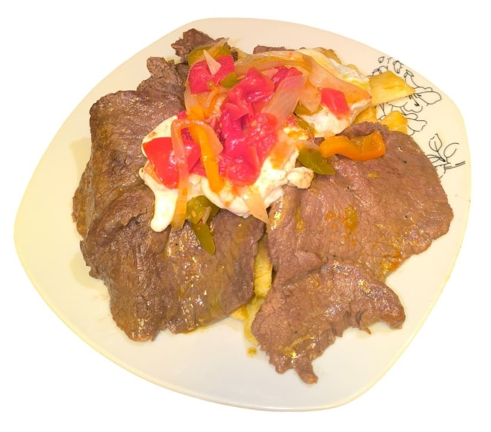

Fun fact about Lomo a la paila!
Lomo a la paila can be enjoyed in many ways, but one thing you’ll always see is a Bolivian adding a red sauce on top. This sauce is called llajwa, and no self-respecting Bolivian would eat lomo a la paila without it. In fact, llajwa is a staple in almost every Bolivian dish, some even put it in their soups! Llajwa is a spicy sauce made primarily from tomatoes and locotos, a type of Bolivian chilli pepper. The level of spiciness can vary from cook to cook, but one thing is certain, Bolivians absolutely love it. Find out more about llajwa here.

-
List of ingredients
- 1 ¼ kg of fillet
- 3 onions
- 2 green chillies (locotos)
- 3 tomatoes
- 2 kg of Imilla potatoes
- 6 eggs
- Oil as needed
- Salt and pepper to taste
-
Pre-preparations and tips
-
Set ingredients ready:
- Cut the fillet into 6 thin medallions
- Peel the onions and slice them into strips
- Slice the green chillies into strips
- Deseed the tomatoes and slice them into strips
- Peel potatoes and cut them into chips
-
-
Preparation
-
Frying the Potatoes
- Place a frying pan over high heat with plenty of oil
- Fry the potatoes until they are soft and golden.
- Drain the excess oil and sprinkle with salt.
- Repeat this process in batches to ensure the potatoes fry evenly and turn out crispy.
-
Preparing the Pans
- Set three frying pans over the heat, each with a little oil. For the eggs, use a bit more oil to prevent sticking.
-
Preparing the Eggs
- In one of the pans, fry the eggs over low heat until cooked to your liking.
-
-
Cooking and plating the dish
-
Grilling the Meat
- In another pan, grill the seasoned meat (salt and pepper) over high heat. The high heat prevents the meat from releasing too much juice, keeping the flavours concentrated inside. This step is essential for achieving a juicy texture and rich taste.
Cooking the Onion and Tomato- In the third pan, sauté the onion for a few minutes. Add the tomato and chilli (locoto), season with salt, and fry for a little longer. Remove from the heat once the vegetables are cooked but still firm.
Plating the Dish- Start with a portion of fried potatoes as the base.
- Place the grilled meat on top.
- Add a fried egg to each serving.
- Finish with the mixture of onion, tomato, and chilli
-
-
Cultural Importance
Lomo a la paila forms part of Bolivians' identity. As one of the most well-known dishes from Cochabamba, it represents not just the culture of Cochabambinos (people from Cochabamba) but also the gastronomy of Bolivia as a whole. Historically, Cochabamba’s fertile valleys provided an abundance of high-quality ingredients that inspired the creation of this delicious and flavourful dish.